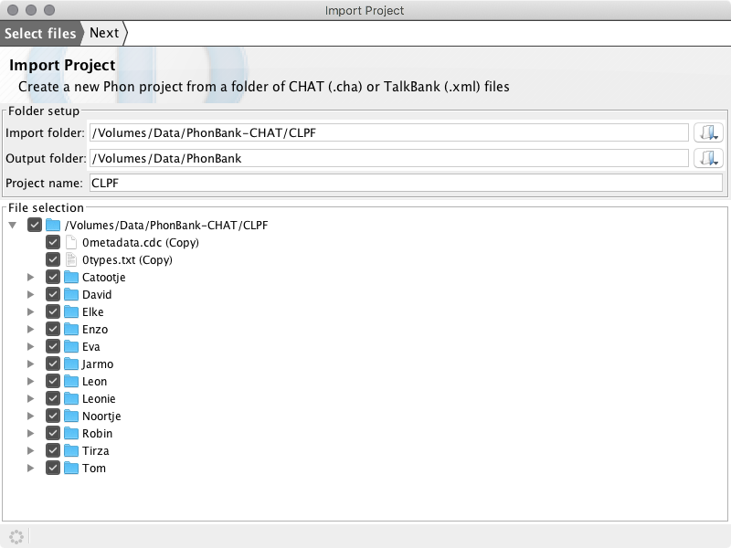
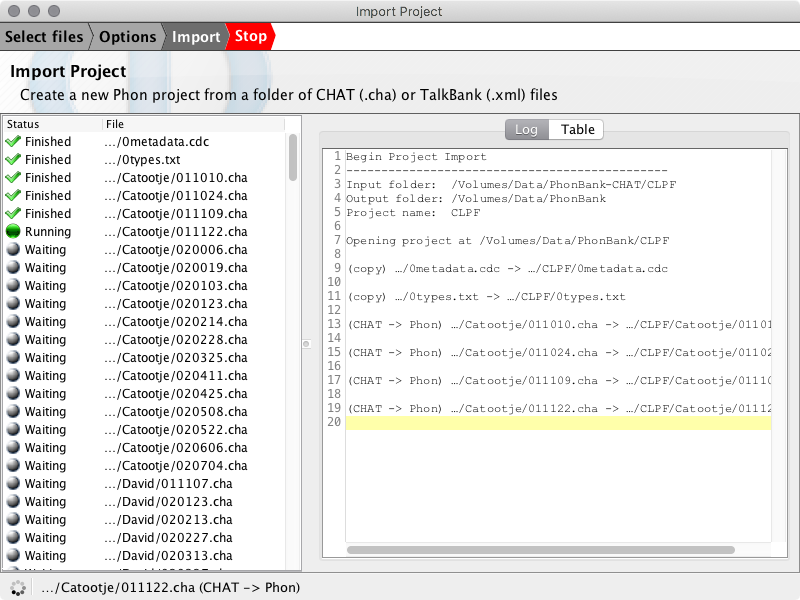

Import from CHAT/TalkBank
Import to Phon from a folder of CHAT (.cha) or TalkBank (.xml) files.
Corpora in CHAT format may be downloaded from:
The Import Project wizard is available from the File menu in Phon.
Example
For this example we will import the CLPF corpus availabale at https://phonbank.talkbank.org/access/Dutch/CLPF.html as a new Phon project. Begin by clicking the CHAT data link and then extract the .zip file after downloading. For our example we will extract the downloaded CLPF.zip file into a folder named /Volumes/Data/PhonBank-CHAT.
Open Phon, choose from the window menu, you will see the screen below:

Select files
Select the folder for import by clicking the Import folder button. (The folder name will be /Volumes/Data/PhonBank-CHAT/CLPF in our example.) Once selected the contents of the folder will appear in the File selection tree. Select files for import using the checkboxes. Be default all files will be selected and any CHAT (.cha) or TalkBank (.xml) files will be detected and selected for conversion. All other files will be copied into the project folder.

- Create new project in workspace folder - this option will be selected by default if the wizard is started from the Welcome window. A new project containing the selected files will be created in the current workspace folder.
- Add files to existing Phon project - this option will be selected by default if the wizard is started from the Project Manager window. When selected a new button for selecting a project folder will become available.
- Advanced (keep existing folder structure) - files will be exported using the same relative paths as the import folder. When selected a new button for selecting an output folder will become available. This option is useful for round-trip testing of data.
Options
Click the Next button at the top of the wizard to view the Options step. In this step you may choose to syllabifiy and align any phonetic transcriptions found in the CHAT files for import.

Import
Click the Next button again to move to the import step. All selected files will appear in the table on the left and a log will appear on the right side of the window. The import process may take some time. The import may be canceled at any time using the Stop button at the top of the window.

When the import has been completed options to Open project, Run again and Close window are displayed.

To export this project back to CHAT or TalkBank format follow the instructions at Export to CHAT/TalkBank.